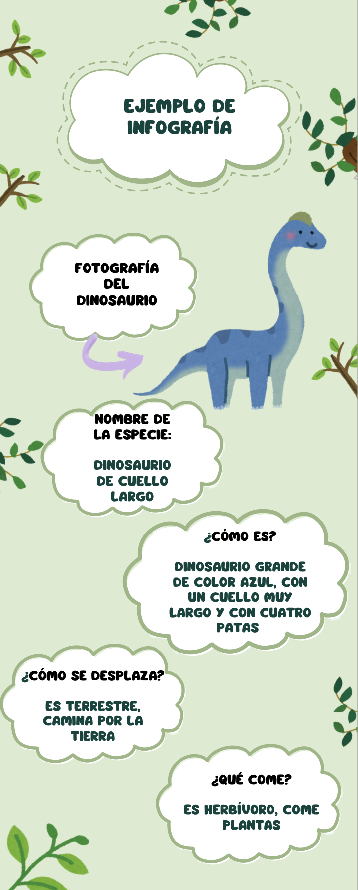

¿Cómo hacer una infografía?
¡Atención, explorador o exploradora!
Ahora vas a crear tu propia infografía sobre un dinosaurio.
Una infografía es un cartel que tiene imágenes y palabras para explicar información de forma clara y fácil de entender. Sirve para que otras personas puedan aprender mirando y leyendo.
Para hacer tu infografía vamos a usar Canva. Canva es una aplicación en el ordenador o la tablet que sirve para crear carteles, dibujos y presentaciones de forma sencilla. El docente te ayudará a utilizarla.
Antes de empezar, fíjate en el ejemplo que vas a ver . Tu infografía debe tener:
- Una imagen del dinosaurio
- El nombre del dinosaurio
- Cómo es (grande, pequeño, cuello largo…)
- Qué come (plantas, carne o de todo)
- Cómo se desplaza (terrestre o volador)
Para ayudarte a escribir, puedes usar estas frases:
- “Mi dinosaurio es…”
- “Tiene…”
- “Come…”
- “Se desplaza…”
Ahora es tu turno. Crea tu infografía en Canva con ayuda del docente
Ejemplo de infografía
